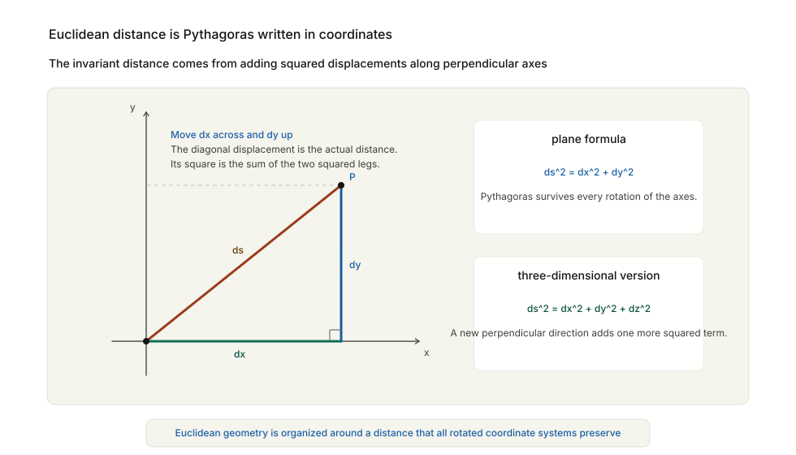
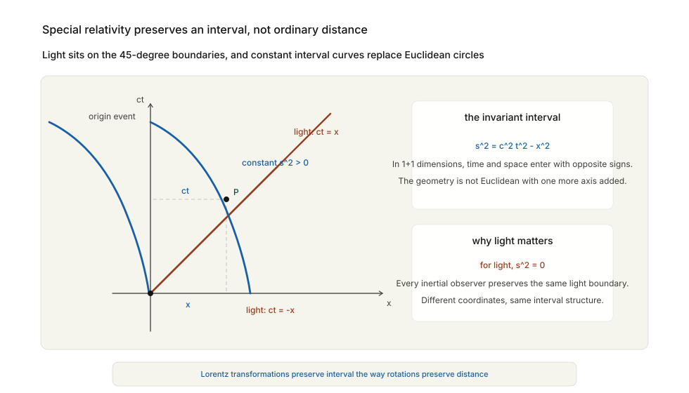

In 1905, a twenty-six-year-old patent clerk in Bern published a paper with an unpromising title: On the Electrodynamics of Moving Bodies.
Its author, Albert Einstein, was not yet Einstein in the later mythic sense. He had no university chair, no institute bearing his name, no international cult of genius around him. He worked at the Swiss patent office, reading technical applications for electromagnetic devices and judging whether the machinery described in them actually made sense. It was good work for a certain kind of mind: precise, skeptical, intolerant of vagueness. But it was not the place from which one expected the structure of the universe to be rewritten.
And yet that is what happened. Einstein’s paper did not merely solve a problem in physics. It revealed that space and time themselves had been misunderstood. The mistake went back to Newton. For two centuries, physicists had imagined that space was a vast fixed stage and time a universal clock ticking identically everywhere. Motion happened in space and through time, but space and time themselves remained untouched by what occupied them. Einstein showed that this picture could not survive once one took light seriously. The result was special relativity. Ten years later, extending the same line of thought, he showed that gravity is not a force in the old Newtonian sense at all. It is geometry: the curvature of spacetime. The result was general relativity.
This is the point in the history of mathematics where one of the subject’s boldest abstractions — non-Euclidean geometry — stops looking like an intellectual luxury and becomes the language of the physical universe.
The shapes that space forgot, as Chapter 12 put it, turned out to be the shapes space had been using all along.
To feel the shock of relativity, one has to begin with the world it replaced.
In Newtonian physics, space and time are absolute. If two events happen five seconds apart for one observer, they happen five seconds apart for every observer. If two lightning strikes occur simultaneously, that simultaneity is universal. Space is a three-dimensional grid extending everywhere; time is a single invisible river flowing equally for all.
This picture fits ordinary experience beautifully. If a train moves at 30 kilometres per hour and a passenger inside walks forward at 5 kilometres per hour relative to the train, then a person standing on the ground sees the passenger moving at:
30 + 5 = 35 km/hThis is Galilean velocity addition. Velocities simply add. In symbols, if one observer sees an object moving at velocity u and that observer is moving at velocity v relative to someone else, then the second observer sees the object moving at:
u + vNothing could seem more natural. It works for thrown balls, walking people, moving carts, ships, and trains. It is one of those pieces of common sense that hardly feels like a theory at all. Newtonian mechanics was built on that common sense and made it mathematically precise. Forces produce accelerations. Bodies move in absolute space over absolute time. The framework worked so well that by the nineteenth century it seemed less like a model than like reality itself.
Then electromagnetism arrived and began to pull the floorboards loose.
James Clerk Maxwell’s equations, written in the 1860s, unified electricity, magnetism, and light in one of the great acts of mathematical compression in scientific history. The equations implied that electromagnetic waves propagate at a fixed speed:
\[ c \]which turns out to be the speed of light.
This created a problem immediately. A speed relative to what?
For ordinary waves, the answer is obvious. Sound travels through air. Water waves travel through water. If light is a wave, physicists reasoned, then it ought to travel through some medium as well. They called this hypothetical medium the luminiferous ether: a subtle, invisible substance filling all space, through which light waves ripple the way water waves ripple through a pond.
Once the ether is postulated, the fixed speed of light makes sense. Light travels at speed c relative to the ether, just as sound travels at a characteristic speed relative to air.
But this merely moved the problem one step. If the earth is moving through the ether, then the measured speed of light ought to depend on direction. A beam sent in the direction of the earth’s motion should behave differently from a beam sent sideways or backward, just as a swimmer moving with or against a river feels the current differently.
Physicists tried very hard to detect this effect. The most famous attempt was the Michelson-Morley experiment of 1887. It was exquisitely designed to measure tiny differences in the speed of light along perpendicular directions as the earth moved through space.
It found nothing. No ether wind. No detectable directional difference. No sign that the earth was moving through a light-bearing medium at all.
This was deeply unsettling. There were several possible responses. One could keep the ether and invent compensating hypotheses. Hendrik Lorentz in the Netherlands, building on an earlier suggestion by George FitzGerald, explored exactly that route: perhaps bodies moving through the ether physically contract in the direction of motion, just enough to hide the expected effect. One could distrust the experiment. Or one could consider something more radical:
perhaps the old ideas of space, time, and velocity were wrong.
Einstein’s 1905 move was audacious because it was so economical. Instead of adding epicycles to save the ether, he began with two postulates.
First: the laws of physics are the same in all inertial frames, meaning in all frames moving at constant velocity relative to one another.
Second: the speed of light in vacuum is the same for all inertial observers, regardless of the motion of the source or the observer.
The first postulate extends an old principle. If you are in a smoothly moving train with the curtains drawn, no internal experiment with falling objects or rolling balls will tell you whether you are “really” moving uniformly or “really” at rest. Uniform motion is relative. Galileo knew this.
The second postulate is the explosive one. It says that if a light beam moves at speed:
\[ c \]for one observer, it moves at the same speed for every inertial observer.
At first glance this seems impossible. If a train moves toward a light beam, should not the passengers measure the beam’s speed differently from people standing beside the track? Under Galilean addition they should. If one observer measures light at speed c, another moving toward it at speed v should measure:
c + vor moving away:
c - vEinstein says no. If the speed of light is the same for everyone, then what must change is not light but the framework in which speed is measured. Since:
speed = distance / timethe quantities called distance and time cannot remain absolute. That is the hinge on which all of relativity turns.
The first casualty is simultaneity.
Imagine a long train moving smoothly along a track. Two bolts of lightning strike the train, one at the front and one at the back. A person standing on the embankment exactly midway between the strike points sees the flashes arrive at the same time and concludes that the strikes were simultaneous.
Now consider a passenger sitting at the midpoint of the train as the train moves forward. By the time the light from the front strike travels inward, the passenger is moving toward it. By the time the light from the back strike travels inward, the passenger is moving away from it. If light has the same speed in both directions, the passenger will receive the front flash before the rear flash.
So the passenger concludes that the front strike happened earlier.
This is not a matter of illusion or delay in perception. It is a structural fact once one insists that light’s speed is the same for both observers. Events simultaneous in one frame need not be simultaneous in another.
That is one of the hardest ideas in the whole of modern physics because it does not merely revise a measurement. It revises a grammar of thought. We are used to believing that “at the same time” names an objective relation in the world. Relativity says: only relative to a frame of reference. There is no universal cosmic now.
Once simultaneity falls, the rest follows quickly. If observers in relative motion disagree about which events are simultaneous, then they must also disagree about lengths and durations, because measuring a length requires deciding which two endpoints are considered at the same time, and measuring a duration requires deciding which clock readings correspond to which events.
Space and time have begun to loosen.
The clearest way to see time dilation is with a light clock.
Imagine a device consisting of two mirrors facing each other, with a light pulse bouncing up and down between them. One round trip of the pulse marks one tick of the clock.
If the mirrors are separated by distance d, then for an observer at rest relative to the clock, one tick takes time:
t = 2d / cNow imagine the whole clock moving sideways past an external observer. From that observer’s point of view, the light pulse no longer travels straight up and down. It traces a zigzag path, because while the pulse moves upward, the mirrors themselves move sideways.
So the external observer sees the light travel a longer path in each tick. But the speed of light is still:
\[ c \]for that observer as well.
Longer path at the same speed means more time. So the moving clock ticks more slowly.
This is not metaphorical. If the time measured by the moving clock is τ and the time measured in the external frame is t, the relation is:
where:
\[ γ = 1 / √(1 - v²/c²) \]As v becomes a significant fraction of c, the factor γ grows. Moving clocks run slow. This is time dilation.
It sounds impossible because everyday velocities are tiny compared to the speed of light, so the effect is normally too small to notice. But it is real. Fast-moving particles live longer than they would at rest. Atomic clocks flown around the earth disagree, by tiny predictable amounts, with clocks left on the ground. Relativity is not philosophical play. The universe behaves this way.
And if time dilates, then lengths contract.
Suppose a rod has length L₀ in the frame where it is at rest. What length does an observer measure who sees the rod rushing past at velocity v?
Special relativity says:
\[ L = L₀ / γ \]where the same Lorentz factor appears:
\[ γ = 1 / √(1 - v²/c²) \]So the moving rod is shorter in the direction of motion. This is length contraction.
Again, one should be careful. The rod does not “really” shrink in some absolute metaphysical sense while secretly retaining its true size elsewhere. There is no frame-independent absolute length here. The rod’s length is a relation between the rod and the observer’s frame, just as simultaneity is.
Space and time have become entangled with motion.
The classical idea had been:
\[ space + time + matter \]as three separately intelligible ingredients.
Relativity replaces this with a single spacetime structure in which measurements of space and time depend on the observer’s state of motion, while a deeper invariant remains unchanged.
That invariant was made geometrically explicit by Hermann Minkowski.
In 1908, Minkowski, who had once taught Einstein in Zürich and not regarded him as a particularly remarkable student, gave the new physics its decisive mathematical form.
Henceforth, he said, space by itself and time by itself are doomed to fade into mere shadows, and only a union of the two will preserve an independent reality.
This was not rhetoric. It was geometry.
In Euclidean plane geometry, the distance between nearby points satisfies:
\[ ds² = dx² + dy² \]This is just the Pythagorean theorem written in coordinate form. Move a little in the x direction and a little in the y direction, and the squared distance is the sum of the two squared displacements.
In three-dimensional Euclidean space:
\[ ds² = dx² + dy² + dz² \]The extra dimension simply adds another squared term. Rotations may change the separate values of dx, dy, and dz, but they leave this total unchanged. That unchanging quantity is what makes Euclidean geometry geometric rather than merely coordinate-based.

Minkowski’s insight was that special relativity also has an invariant quantity, but it is not ordinary spatial distance. It is the spacetime interval:
\[ s² = c²t² - x² - y² - z² \]The minus signs are the crucial novelty. Time does not enter in the same way the spatial coordinates do. This is why spacetime is not just ordinary four-dimensional Euclidean space with an extra axis attached. Its geometry has a different structure.
One way to feel this is to look at light itself. For a light pulse, distance travelled equals ct, so the interval is:
That remains true for every inertial observer. Different observers may disagree about the separate values of t, x, y, and z, but they agree on the interval built from them. In Euclidean geometry, all rotated coordinate systems agree on distance. In relativity, all inertial frames agree on the spacetime interval.

That is the geometric heart of special relativity.
Put less formally: if everyone must measure the same speed of light, then space and time cannot stay separate. Change the observer, and both the distance and the time coordinate must adjust together. Lorentz transformations are the exact rules for that adjustment.
Lorentz transformations, which replace the old Galilean transformations, are exactly those changes of coordinates that preserve the spacetime interval. Just as rotations in Euclidean geometry preserve:
\[ x² + y² \]Lorentz transformations preserve:
\[ c²t² - x² - y² - z² \]This turns physics into geometry in a very strong sense. The odd phenomena of relativity — time dilation, length contraction, relativity of simultaneity — are not a collection of disconnected curiosities. They are manifestations of the geometry of spacetime. Once Minkowski had said this clearly, the theory looked different. Einstein had not merely repaired electrodynamics. He had discovered a new geometry of the world. And this geometry was already non-Euclidean in spirit. Time entered with a different sign. Space and time were not separate axes in an ordinary four-dimensional Euclidean box. The structure was subtler and stranger. This was only the beginning.
Special relativity solved the problem of light and uniform motion, but it left gravity in an awkward position.
Newtonian gravity acts instantaneously across space. If the sun moved suddenly, the earth would, in Newton’s equations, feel the effect at once. That could not be right in a universe where no influence travels faster than light.
There was also a deeper clue: the equality of inertial and gravitational mass.
In Newtonian mechanics, inertial mass measures resistance to acceleration. Gravitational mass measures response to gravity. They are conceptually different, yet experimentally they are equal to extraordinary precision. That is why, neglecting air resistance, heavy and light bodies fall together.
Einstein saw in this equality not a coincidence but a principle. Imagine being inside a sealed box.
If the box is floating freely in space but being pulled upward with acceleration g, objects inside fall to the floor exactly as they do in an ordinary gravitational field of strength g.
Conversely, if the box is in free fall in a gravitational field, everything inside seems weightless. Objects drift beside you. Locally, gravity has disappeared.
This is the equivalence principle. Locally, acceleration and gravity are indistinguishable. That principle suggests a radical reinterpretation. Perhaps gravity is not a force pulling objects through space. Perhaps free fall is actually force-free motion, and what we call gravity is a manifestation of the geometry of spacetime itself. This is where Riemann returns.
Chapter 12 ended with Riemann’s great idea: geometry is determined by a local rule for distance, and that rule may vary from point to point. Space need not be flat. Curvature can be intrinsic.
General relativity is the moment when that abstract mathematics becomes physics. Mass and energy, Einstein proposed, curve spacetime. Bodies and light rays then move along geodesics in that curved spacetime. In flat spacetime, a geodesic is the relativistic analogue of a straight line. In curved spacetime, geodesics bend, not because some mysterious force deflects objects off their natural path, but because the natural path itself is curved by the geometry.
This is an extraordinarily hard idea to accept at first because Newton’s image is so strong. We imagine the earth orbiting the sun because the sun pulls on it through empty space. Einstein’s image is different. The sun changes the geometry around it, and the earth follows the nearest thing to a straight worldline available in that geometry.
John Wheeler, much later, would summarise it neatly: matter tells spacetime how to curve; spacetime tells matter how to move. That is a slogan, not an equation. But it captures the idea.
The actual field equations of general relativity are among the most beautiful in physics. In compressed symbolic form they relate spacetime curvature to energy and momentum:
\[ Gμν = (8πG/c⁴) Tμν \]One need not parse every symbol here to appreciate the structure. On one side stands geometry. On the other stands matter and energy. The equation says they determine one another.
The old distinction between mathematics and the physical world had narrowed dramatically. A geometry devised in the nineteenth century without immediate physical application had become the indispensable language for the twentieth-century theory of gravity.
A theory this strange could not be accepted on elegance alone. It needed predictions. General relativity supplied them.
One was the anomalous precession of Mercury’s orbit. Newtonian mechanics explained almost all of Mercury’s motion, but not quite all of it. There remained a small unexplained discrepancy in the rotation of the orbit’s ellipse. Einstein’s equations accounted for it exactly.
Another was the bending of light by gravity. If gravity is geometry, then light itself should follow curved paths in the vicinity of massive bodies, even though light has no mass in the Newtonian sense.
This prediction was tested during the solar eclipse of 1919 by expeditions led by Arthur Eddington. Starlight passing near the sun appeared displaced by just the amount Einstein’s theory predicted.
The newspapers made Einstein famous almost overnight. There is a tendency to romanticise this moment, and one should be careful. The observational history is more complicated and less theatrically decisive than legend likes to pretend. But the larger point stands. General relativity made quantitative predictions that survived confrontation with the world. It was not merely a philosophical reinterpretation of gravity. It was a working physical theory.
The geometry of spacetime had become observable. That is a remarkable sentence. It means that the abstractions of Riemann and the invariants of Minkowski were no longer internal mathematical constructions. They were features of reality.
The significance of relativity is not only scientific. It is historical in the specific sense this book has been tracing from the start.
Mathematics begins with practical pressure: grain, land, debt, calendars, navigation, artillery. Over time it abstracts, generalises, and seems to drift away from immediate reality. Imaginary numbers look useless. Non-Euclidean geometry looks fictional. Set theory looks metaphysical.
Then, unexpectedly but repeatedly, the abstractions return as the exact language some new science requires.
Relativity is one of the purest examples. Without advanced calculus, there is no Einstein field theory. Without non-Euclidean geometry, there is no curved spacetime. Without the nineteenth-century shift toward structural mathematics, there is no way even to formulate the modern universe.
This is the deep continuity between Chapter 12 and Chapter 15. Lobachevsky, Bolyai, Gauss, and Riemann were not writing footnotes to Euclid. They were preparing physics for a future it had not yet reached.
That is one reason the history of mathematics so often feels prophetic in retrospect. The subject keeps building languages before anyone knows what they will be needed for.
After relativity, certain ancient intuitions could no longer be maintained. There is no universal time flowing identically everywhere. There is no absolute simultaneity. There is no gravitational force in the old Newtonian sense, at least not at the deepest level. There is no fixed Euclidean backdrop on which the universe simply acts out its motions. Instead there is spacetime: dynamic, measurable, geometric, and responsive to matter and energy.
That picture is strange, but it has endured. Modern cosmology, black-hole physics, gravitational lensing, GPS satellite corrections, and the expansion of the universe all live within the relativistic framework.
It is difficult now to recover how radical it once was. One reason is that Einstein’s name has become cultural shorthand for genius, which makes the theory feel inevitable in hindsight. It was not. It required giving up habits of thought older than Newton and accepting that geometry itself is part of physics.
This was not only a triumph of imagination. It was a triumph of mathematical trust. Einstein trusted that the right mathematics could reveal physical reality even when reality outran common sense. That trust had been earned, chapter by chapter, across centuries.
By the early twentieth century, mathematics had become powerful enough not merely to describe the world but to reveal that the world is structurally different from how unaided intuition takes it to be. That is an extraordinary achievement.
It is also not the end. Once mathematics and logic had both become this powerful, a final question pressed with new urgency. If the subject can build theories of infinity, curved spacetime, and hidden symmetry, can it also secure its own foundations completely? Can mathematics certify itself? The next chapter turns to that question.
In the next chapter, mathematicians and logicians try to complete the oldest dream in the subject: a formal system strong enough to capture all mathematical truth and secure enough to prove its own consistency. Hilbert believed this could be done. Gödel would show, with brutal elegance, that it cannot.